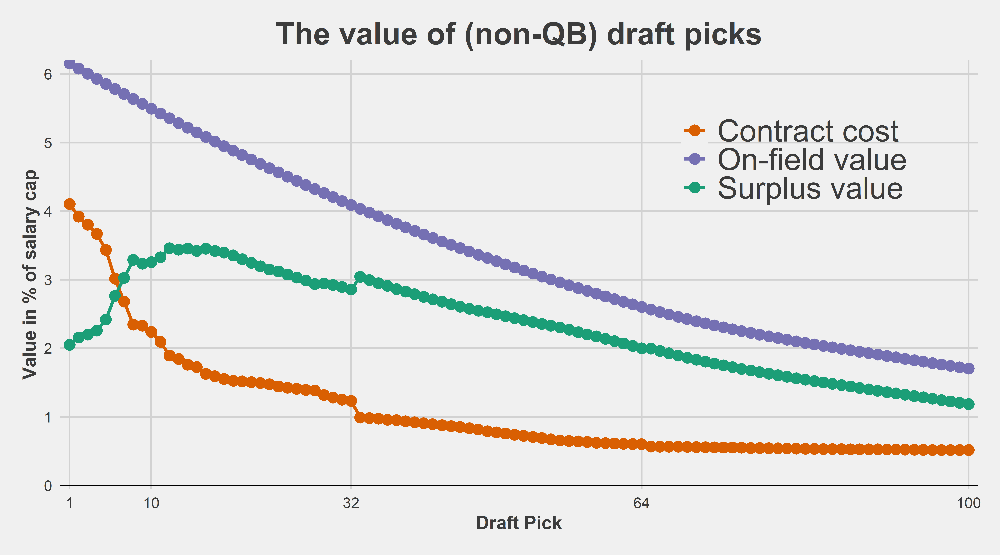
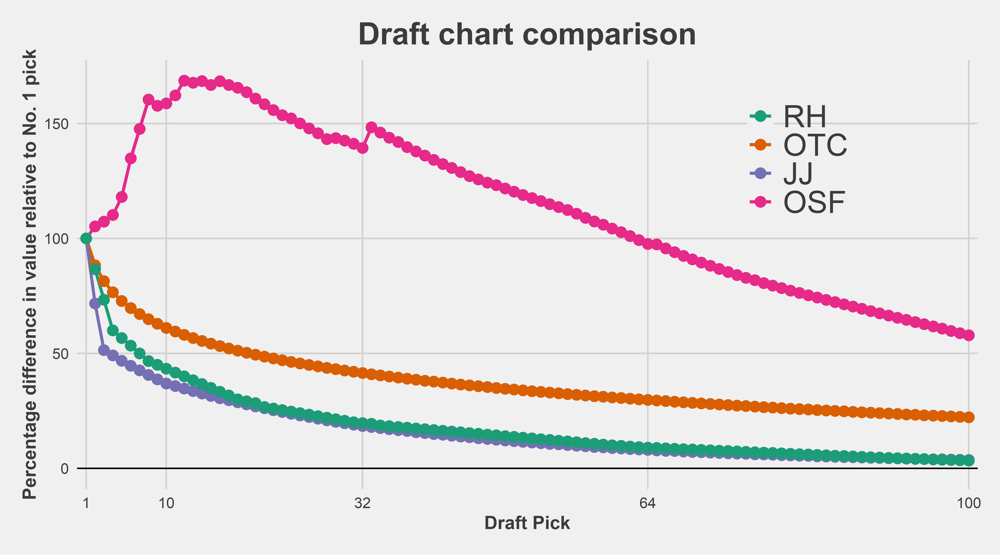

There are a million draft charts out there:
So what’s the point of this? Basically the only reason is for anyone curious to see how this might be constructed. Like the Fitzgerald-Spielberger (OTC) NFL Draft Trade Value Chart, we’re going to use second contracts of a measure of how valuable each player was. There are some obvious limitations to this:
- We assume that a player’s value on the first 4 years of his rookie contract is well represented by what he gets on his 2nd deal. For players who improved a lot at the end of their rookie deals (or suffered serious injury), the measure is far from perfect
- We aren’t capturing the value provided by 5th year option for 1st round picks (somewhat underestimates 1st round pick value)
- We aren’t capturing the value of being able to re-sign a player before he hits the open market
We’re only going to do this for non-QBs. The value of QBs is so different than every other position that they should be considered separately in any draft analysis.
Step 1: Make a surplus value curve
How expensive is each draft pick’s rookie deal?
The first thing we need is how expensive each draft pick is. Some googling led me to this page.
page <- read_html("https://www.spotrac.com/nfl/draft/") %>%
html_table()
t <- map_df(1:6, ~{
page[[.x]] %>%
janitor::clean_names() %>%
dplyr::slice(-1) %>%
dplyr::select(c(1, 7)) %>%
set_names(c("pick", "value")) %>%
# lol dolphins forfeited their pick
filter(value != "-") %>%
mutate(
pick = as.integer(pick),
# for some reason as.numeric doesn't work so have to do this insane thing
value = stringr::str_remove(value, "\\$"),
v1 = stringr::str_extract(value, "[:digit:]*(?=\\,)") %>% as.integer(),
v2 = stringr::str_extract(value, "(?<=\\,)[:digit:]*(?=\\,)") %>% as.integer(),
v3 = stringr::str_extract(value, "(?<=\\,)[:digit:]*$") %>% as.integer(),
# thousands per year avg
val = (1000000 * v1 + 1000 * v2 + v3) / 4000
) %>%
select(pick, value, val)
})
# average cap over next 4 seasons (in thousands of $)
cap_2023 <- 224800000
cap_tot <- (cap_2023 + cap_2023 * 1.07 + cap_2023 * (1.07^2) + cap_2023 * (1.07^3)) / 4000
# get APY % of cap by draft position
contracts <- t %>%
mutate(
# fill in the random missing picks
row = (1 : n()) + 1,
pick = ifelse(is.na(pick), row, pick),
# calculate % of cap by dividing by average cap over next 4 seasons
contract_cap_pct = val / cap_tot
) %>%
select(draft_overall = pick, contract_cap_pct)
glimpse(contracts)Rows: 219
Columns: 2
$ draft_overall <dbl> 1, 2, 3, 4, 5, 6, 7, 8, 9, 10, 11, 12, 13, …
$ contract_cap_pct <dbl> 0.04104752, 0.03920661, 0.03803514, 0.03669…A couple notes on the above. First, we’re assuming cap growth rate of 7% over the next 3 seasons (i.e., 2024, 2025, and 2026) before converting the total amount of the rookie deal into a percentage of the cap. For example, the 2023 cap is about $225 million, while the average of the 2023 through 2026 caps is about $250 million using this procedure. Taking the Bears’ No. 1 pick for example, we have total value of about $41 million spread, which is about $10.2 million per season, or 10.2/250 or 4.1 percent of the cap. If we did not assume cap growth rates, then we would divide 10.2 by 225 which is about 4.5 percent of the cap. In other words, we’d be counting the high draft picks as too expensive.
How productive has each pick been?
Here we’re going to get the average APY in terms of percent of the cap for each drafted player’s second deal (i.e., first deal after rookie contract). For players that did not receive a second contract, we’ll assign them a value of zero.
players <- nflreadr::load_contracts() %>%
filter(between(draft_year, 2011, 2017)) %>%
arrange(otc_id, year_signed) %>%
group_by(otc_id) %>%
dplyr::slice(1:2) %>%
mutate(
contracts = n(), row = 1 : n()
) %>%
select(player, otc_id, position, team, draft_year, year_signed, years, value, apy, apy_cap_pct, draft_overall, contracts, row) %>%
filter(
!is.na(draft_overall), # was drafted
position != "QB", # is not a QB
contracts == 1 | row == 2 # either only got drafted (no 2nd contract) or 2nd contract
) %>%
ungroup() %>%
arrange(draft_year, draft_overall) %>%
mutate(
# fill in 0 for guys who didn't get 2nd contract
apy_cap_pct = ifelse(contracts == 1, 0, apy_cap_pct)
)
# smooth contract value
mod <- loess(players$apy_cap_pct ~ players$draft_overall)
players$fit <- mod$fittedCombine all of our data
Some final cleaning.
picks <- players %>%
group_by(draft_overall) %>%
slice_head(n = 1)
data <- picks %>%
left_join(contracts, by = "draft_overall") %>%
ungroup() %>%
mutate(
contract_cap_pct = ifelse(
draft_overall == 21 & is.na(contract_cap_pct), (lead(contract_cap_pct) + lag(contract_cap_pct))/2, contract_cap_pct
),
surplus = fit - contract_cap_pct
) %>%
select(draft_overall, fit, surplus, contract_cap_pct) %>%
pivot_longer(2:4) %>%
# convert to % of cap
mutate(value = value * 100)Plot the result

We have uncovered the now-familiar result that if you are not drafting a quarterback, the surplus value of the very top picks is lower than later in the first round and even most of the second round. This was originally referred to as the loser’s curse in the seminal paper by Cade Massey and Richard Thaler during the old CBA, but still holds up now. It was earlier found by PFF’s Timo Riske using a similar approach using second contracts and also found by Riske when using PFF Wins Above Replacement (WAR).
This looks remarkably similar to Timo’s work:

Compare to other draft curves
Let’s start with OTC since it’s easiest to scrape. Here’s getting the chart:
raw_otc <- read_html("https://overthecap.com/draft-trade-value-chart") %>%
html_table() %>%
pluck(1) %>%
janitor::clean_names()
# what peak coding performance looks like
otc <- bind_rows(
raw_otc %>% select(pick, value),
raw_otc %>% select(pick = pick_2, value = value_2),
raw_otc %>% select(pick = pick_3, value = value_3),
raw_otc %>% select(pick = pick_4, value = value_4)
) %>%
select(draft_overall = pick, otc_value = value) %>%
mutate(otc_value = otc_value / dplyr::first(otc_value))
glimpse(otc)Rows: 128
Columns: 2
$ draft_overall <int> 1, 2, 3, 4, 5, 6, 7, 8, 9, 10, 11, 12, 13, 14,…
$ otc_value <dbl> 1.0000000, 0.8830000, 0.8143333, 0.7656667, 0.…Next the Rich Hill chart:
raw_rh <- read_html("https://www.drafttek.com/NFL-Trade-Value-Chart-Rich-Hill.asp") %>%
html_table() %>%
pluck(2) %>%
janitor::clean_names() %>%
select(x2, x4, x6) %>%
filter(!is.na(x6))
rh <- bind_rows(
raw_rh %>% select(value = x2) %>% filter(!is.na(value)),
raw_rh %>% select(value = x4) %>% filter(!is.na(value)),
raw_rh %>% select(value = x6) %>% filter(!is.na(value))
) %>%
mutate(draft_overall = 1 : n()) %>%
mutate(rh_value = value / dplyr::first(value)) %>%
select(-value)And the original Jimmy Johnson chart:
raw_jj <- read_html("https://www.drafttek.com/NFL-Trade-Value-Chart.asp") %>%
html_table() %>%
pluck(2) %>%
janitor::clean_names() %>%
select(x2, x4, x6) %>%
filter(!is.na(x6))
jj <- bind_rows(
raw_jj %>% select(value = x2) %>% filter(!is.na(value)),
raw_jj %>% select(value = x4) %>% filter(!is.na(value)),
raw_jj %>% select(value = x6) %>% filter(!is.na(value))
) %>%
mutate(draft_overall = 1 : n()) %>%
mutate(jj_value = value / dplyr::first(value)) %>%
select(-value)Combine:
And the plot:

Full table
Below is a table of estimated surplus value by pick. Remember that this is for non-QBs. We can now use this to evaluate trades in which neither team took a quarterback. For example, last year’s controversial Lions-Vikings trade, in which the Vikings were panned for the lack of return they got for moving back 20 picks in the first round.
Here’s the trade with the estimated values obtained from this post (full table is below):
- Detroit Lions receive: No. 12 (169), No. 46 (124). Total: 293
- Minnesota Vikings receive: No. 32 (139), No. 34 (146), No. 66 (96). Total: 381
- Difference: 88, which is the value of pick No. 71
So the surplus value the Vikings obtained in this trade was the equivalent of an early third-round pick. Not bad for a trade that popular commentary thought that they lost!
Here’s the full table:
df %>%
filter(name == "value", !is.na(value)) %>%
mutate(value = (100 * value) %>% round(0)) %>%
gt()| draft_overall | name | value |
|---|---|---|
| 1 | value | 100 |
| 2 | value | 105 |
| 3 | value | 107 |
| 4 | value | 110 |
| 5 | value | 118 |
| 6 | value | 135 |
| 7 | value | 148 |
| 8 | value | 160 |
| 9 | value | 158 |
| 10 | value | 159 |
| 11 | value | 162 |
| 12 | value | 169 |
| 13 | value | 168 |
| 14 | value | 168 |
| 15 | value | 167 |
| 16 | value | 168 |
| 17 | value | 167 |
| 18 | value | 166 |
| 19 | value | 164 |
| 20 | value | 161 |
| 21 | value | 158 |
| 22 | value | 156 |
| 23 | value | 154 |
| 24 | value | 152 |
| 25 | value | 150 |
| 26 | value | 148 |
| 27 | value | 146 |
| 28 | value | 143 |
| 29 | value | 144 |
| 30 | value | 143 |
| 31 | value | 141 |
| 32 | value | 139 |
| 33 | value | 148 |
| 34 | value | 146 |
| 35 | value | 144 |
| 36 | value | 142 |
| 37 | value | 140 |
| 38 | value | 138 |
| 39 | value | 136 |
| 40 | value | 134 |
| 41 | value | 132 |
| 42 | value | 131 |
| 43 | value | 129 |
| 44 | value | 127 |
| 45 | value | 126 |
| 46 | value | 124 |
| 47 | value | 123 |
| 48 | value | 122 |
| 49 | value | 120 |
| 50 | value | 119 |
| 51 | value | 118 |
| 52 | value | 116 |
| 53 | value | 115 |
| 54 | value | 114 |
| 55 | value | 112 |
| 56 | value | 111 |
| 57 | value | 109 |
| 58 | value | 107 |
| 59 | value | 106 |
| 60 | value | 104 |
| 61 | value | 103 |
| 62 | value | 101 |
| 63 | value | 99 |
| 64 | value | 98 |
| 65 | value | 97 |
| 66 | value | 96 |
| 67 | value | 94 |
| 68 | value | 92 |
| 69 | value | 91 |
| 70 | value | 89 |
| 71 | value | 88 |
| 72 | value | 87 |
| 73 | value | 85 |
| 74 | value | 84 |
| 75 | value | 83 |
| 76 | value | 82 |
| 77 | value | 81 |
| 78 | value | 79 |
| 79 | value | 78 |
| 80 | value | 77 |
| 81 | value | 76 |
| 82 | value | 75 |
| 83 | value | 74 |
| 84 | value | 73 |
| 85 | value | 72 |
| 86 | value | 71 |
| 87 | value | 70 |
| 88 | value | 69 |
| 89 | value | 68 |
| 90 | value | 67 |
| 91 | value | 66 |
| 92 | value | 65 |
| 93 | value | 65 |
| 94 | value | 64 |
| 95 | value | 63 |
| 96 | value | 62 |
| 97 | value | 61 |
| 98 | value | 60 |
| 99 | value | 59 |
| 100 | value | 58 |
| 101 | value | 57 |
| 102 | value | 56 |
| 103 | value | 55 |
| 104 | value | 57 |
| 105 | value | 56 |
| 106 | value | 55 |
| 107 | value | 54 |
| 108 | value | 54 |
| 109 | value | 53 |
| 110 | value | 52 |
| 111 | value | 52 |
| 112 | value | 51 |
| 113 | value | 50 |
| 114 | value | 50 |
| 115 | value | 49 |
| 116 | value | 48 |
| 117 | value | 48 |
| 118 | value | 47 |
| 119 | value | 47 |
| 120 | value | 46 |
| 121 | value | 45 |
| 122 | value | 45 |
| 123 | value | 44 |
| 124 | value | 44 |
| 125 | value | 43 |
| 126 | value | 42 |
| 127 | value | 42 |
| 128 | value | 41 |
| 129 | value | 40 |
| 130 | value | 40 |
| 131 | value | 39 |
| 132 | value | 39 |
| 133 | value | 38 |
| 134 | value | 38 |
| 135 | value | 37 |
| 136 | value | 38 |
| 137 | value | 37 |
| 138 | value | 37 |
| 139 | value | 37 |
| 140 | value | 37 |
| 141 | value | 36 |
| 142 | value | 36 |
| 143 | value | 35 |
| 144 | value | 35 |
| 145 | value | 35 |
| 146 | value | 34 |
| 147 | value | 34 |
| 148 | value | 34 |
| 149 | value | 33 |
| 150 | value | 33 |
| 151 | value | 33 |
| 152 | value | 32 |
| 153 | value | 32 |
| 154 | value | 31 |
| 155 | value | 31 |
| 156 | value | 31 |
| 157 | value | 30 |
| 158 | value | 30 |
| 159 | value | 29 |
| 160 | value | 29 |
| 161 | value | 28 |
| 162 | value | 28 |
| 163 | value | 27 |
| 164 | value | 27 |
| 165 | value | 26 |
| 166 | value | 26 |
| 167 | value | 26 |
| 168 | value | 25 |
| 169 | value | 25 |
| 170 | value | 24 |
| 171 | value | 24 |
| 172 | value | 23 |
| 173 | value | 23 |
| 174 | value | 22 |
| 175 | value | 22 |
| 176 | value | 22 |
| 177 | value | 21 |
| 178 | value | 21 |
| 179 | value | 20 |
| 180 | value | 20 |
| 181 | value | 20 |
| 182 | value | 19 |
| 183 | value | 19 |
| 184 | value | 18 |
| 185 | value | 18 |
| 186 | value | 18 |
| 187 | value | 17 |
| 188 | value | 17 |
| 189 | value | 16 |
| 190 | value | 16 |
| 191 | value | 16 |
| 192 | value | 15 |
| 193 | value | 15 |
| 194 | value | 15 |
| 195 | value | 14 |
| 196 | value | 14 |
| 197 | value | 14 |
| 198 | value | 13 |
| 199 | value | 13 |
| 200 | value | 13 |
| 201 | value | 12 |
| 202 | value | 12 |
| 203 | value | 12 |
| 204 | value | 12 |
| 205 | value | 11 |
| 206 | value | 11 |
| 207 | value | 11 |
| 208 | value | 10 |
| 209 | value | 10 |
| 210 | value | 10 |
| 211 | value | 10 |
| 212 | value | 9 |
| 213 | value | 9 |
| 214 | value | 9 |
| 215 | value | 9 |
| 216 | value | 8 |
| 217 | value | 8 |
| 218 | value | 8 |
| 219 | value | 8 |
| 220 | value | 7 |